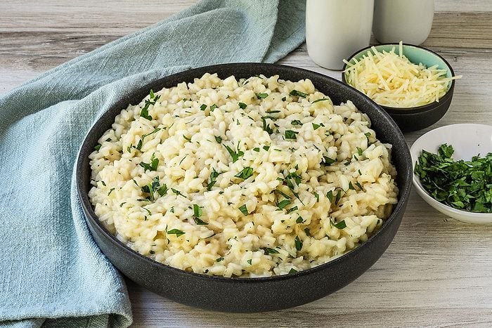

Risotto
Home
Risotto

Risotto is a classic Italian dish known
for its creamy texture and rich flavor. It is made
by slowly cooking rice in broth until it reaches a
creamy consistency, often incorporating ingredients
like onions, garlic, wine, and Parmesan cheese.
Ingredients
- 1 1/2 cups Arborio rice
- 4 cups chicken or vegetable broth
- 1 small onion, finely chopped
- 2 cloves garlic, minced
- 1/2 cup dry white wine
- 1/2 cup grated Parmesan cheese
- 2 tablespoons butter
- Salt and pepper to taste
Instructions
- Heat the broth in a saucepan and keep it warm over low heat.
- In a large skillet, melt the butter over medium heat. Add the onion and garlic, and sauté until softened.
- Add the Arborio rice to the skillet and cook for 1-2 minutes, stirring constantly, until the rice is lightly toasted.
- Pour in the white wine and cook until it is mostly absorbed by the rice.
- Begin adding the warm broth, one ladle at a time, stirring frequently. Wait until the liquid is mostly absorbed before adding the next ladle of broth.
- Continue this process until the rice is creamy and cooked to your desired texture, which usually takes about 18-20 minutes.
- Remove the skillet from heat and stir in the grated Parmesan cheese. Season with salt and pepper to taste.
- Serve the risotto immediately, garnished with additional Parmesan cheese if desired.